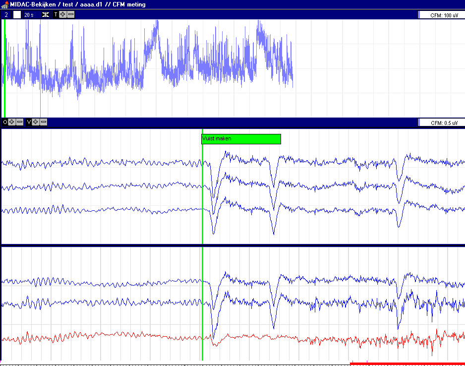
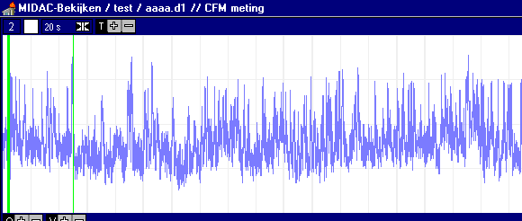

RF 2, Onset Systolische Bloeddruk
|
Digitaal EEG Systeem |
||
|
CFM Meting |
Conclusie: Op basis van het huidige EPP kastje kan een goed digitaal EEG systeem gebouwd worden. Zie onderstaande voorbeelden.
Het systeem bestaat uit een patient-box, een tussenkastje, PC (eventueel portable) en een scheidingstransformator.
Dit geheel kan het beste op een 'slanke' kar worden geplaatst, zodat het systeem gemakkelijk in de buurt van een couveuse geplaatst kan worden. De afstand tussen patientbox en PC kan meerdere meters bedragen, zodat de PC ook op grotere afstand geplaatst kan worden.
Doordat altijd de ruwe data wordt opgeslagen en alle signaalbewerkingen software-matig geschieden is zowel online als offline een grote flexibiliteit beschikbaar (dus ook 1 of meer-kanaals CFM meting).
De volgende gewenste functionaliteiten waren in de proefopstelling nog niet aanwezig, c.q. nog niet optimaal:
- electrode impedantie tester
- juiste patientbox, d.w.z. goede pluggen, pluggen geplaatst in de vorm van bovenaanzicht hoofd
- glasvezel kabel blijkt te kwetsbaar (vervangen door koper)
- batterij voeding te vervangen door 6kV/2pF voeding
- slanke kar
- CSA, real-time frequentie analyse (wordt momenteel uitgetest in Midac)
Onderstaand voorbeeld is een opname van een gezonde volwassen vrijwilliger.
|
CFM op Cz |
Zowel de filtering aan de lage als aan de hoge kant dienen nog iets scherper te worden uitgevoerd. Amplitude overeenkostig CFM specificaties, halverwege = 10 uVtt, top = 100 uVtt. Door de vele oogbewegingen en de korte tijdsduur (waardoor beperkte tijdscompressie 20 sec/div) lijken er erg veel spikes in het CFM te zitten. |
|
F4 C4 Cz |
Standaard Unipolaire afleidingen (software matig ook achteraf instelbaar) Gefilterd van 2 tot 16 Hz (ook softwarematig instelbaar) Volledig venster = 300uVtt, Tijdbasis 200 msec/div |
|
C3 F3 F3-C3 |
Standaard Uni-polaire en Bi-polaire afleidingen idem |


Zelfde opname, zelfde tijdssegment, CFM op F4
De hardware bepaalt wat er wordt opgeslagen en met welke informatie-bandbreedte.
- hardware meet 8 differentiële kanalen (9 electroden + eventueel DRL)
- opslag van ruwe signalen in volledige 24 bits notatie
- bandbreedte DC-100 Hz
- ruis < 1 uVtt (over volle bandbreedte)
- CMMR zeer goed
De software bepaalt de filtering en andere (niet-lineaire) bewerkingen en de wijze wat er hoe wordt weergegeven. De weergave kan voor opname en weergave verschillend zijn. Omdat alle ruwe data beschikbaar is, kan men achteraf altijd andere analyses uitvoeren.
- alle uni-polaire en bi-polaire afleidingen mogelijk
- CFM op een of meerdere afleidingen
- normaal EEG en CFM op verschillende tijdas af te beelden
- programma start geheel automatisch, zonder dat er instellingen behoeven te worden gedaan
- aantal kanalen / sample-frequentie is instelbaar (waardoor beperking van de opslagruimte mogelijk)
- bij het uitvallen van de computer gaat geen reeds opgenome data verloren
- frequentie analyse mogelijk
- export naar clipboard en printer mogelijk
- pentium II, >200 MHz
- printerpoort EEP 1.9 compatibel
8 kanalen * 4 byte * 200 Hz = 6.4 kbyte/s
1 uur opname = 23 Mbyte
24 uur opname = 0.5 Gbyte
© Copyright Instrumentele Dienst
SM 17-12-1998